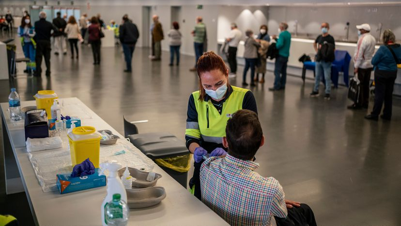

La gaceta de la tarde
Sanidad permitirá vacunar con AstraZeneca a los mayores de 65 solo si son trabajadores esenciales

La comisión de Sanidad Pública también ha acordado que el fármaco de Janssen se utilice para incrementar "el ritmo de vacunación" en los grupos de mayor edad.
El Ministerio de Sanidad ha decidido eliminar el límite de edad para administrar la vacuna de AstraZeneca a las personas incluidas en los grupos esenciales y permitirá aplicarla a mayores de 65 años. La decisión se ha tomado en una reunión de la comisión de Sanidad Pública celebrada este martes, según fuentes conocedoras del contenido de la reunión. Esta vacuna estuvo limitada anteriormente en España a personas menores de 55 años. Posteriormente, se amplió el grupo de edad hasta los 65. La Organización Mundial de la Salud recomendó utilizarla para todos los grupos de población. El fármaco de Janssen se utilizará para “incrementar el ritmo de vacunación de los grupos de mayor edad”.
Varios estados de Alemania paralizan la vacunación con el fármaco anglosueco
El comité de vacunación recomienda el preparado solo para los mayores de 60 años
Tres estados federados alemanes, Berlín, Brandenburgo y Renania del Norte- Westfalia, y la ciudad de Múnich, en Baviera, han anunciado que paralizan la vacunación de menores de 60 años con el preparado de AstraZeneca. Responsables de estos territorios han asegurado que no pondrán más vacunas de esta compañía tras conocerse que en el país se han registrado 31 casos de trombosis —de los cuales nueve resultaron en fallecimiento— en personas que habían sido vacunadas con AstraZeneca poco antes. La canciller alemana, Angela Merkel, abordará esta noche con los poderes regionales la situación en torno a esta vacuna.
El primer cometa interestelar está hecho del material más antiguoconocido
Dos estudios afirman que El Borisov es un vestigio de hace 4.500 millones de años

En verano de 2019 llegó a nuestro sistema solar un objeto desconocido procedente de una estrella sin identificar. Era el primer cometa interestelar que se había observado hasta el momento. Nadie sabía de qué estaba hecho ni cuánto tiempo había viajado por el espacio interestelar hasta pasar como una exhalación por el cielo terrestre. Gennady Borisov, un astrónomo aficionado de Ucrania, fue el primero en obsevarlo.
© La gaceta de la tarde. Todos los derechos reservados